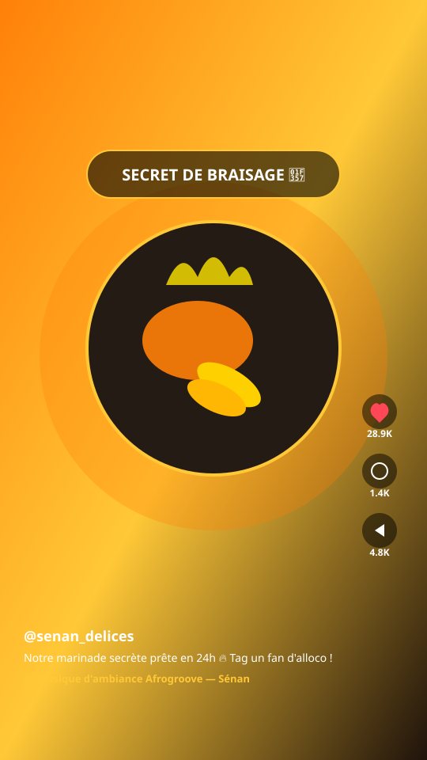
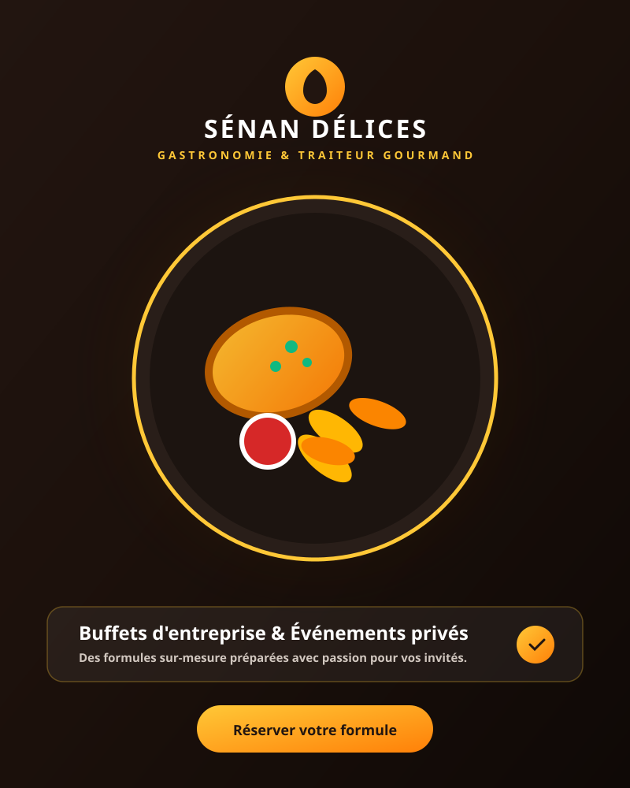
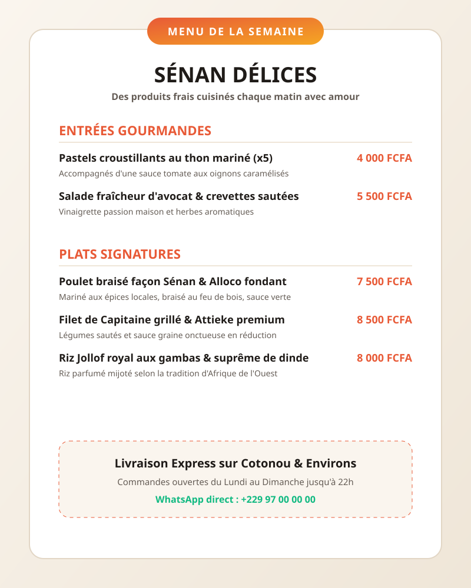

Du format ASMR crépitant aux coulisses de préparation des buffets d'entreprise.

Focus sur les bruits de découpe, les crépitements du poulet sur le gril au feu de bois et la sauce verte onctueuse versée en ralenti 60fps. Ce format a été partagé plus de 3 000 fois sur TikTok.

Format documentaire dynamique montrant l'envers du décor : sélection des ingrédients frais au marché tôt le matin, travail d'équipe en cuisine et mise en place soignée chez le client corporatif.

Vidéo diffusée chaque lundi à 10h ciblant les actifs et employés de bureau. Présentation des formules à emporter et bouton de précommande WhatsApp en 1 clic.
Mettez l'eau à la bouche de vos clients avec des vidéos qui mettent en valeur l'authenticité et la qualité de vos créations culinaires.